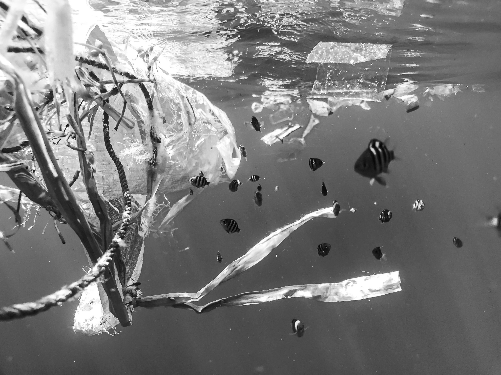
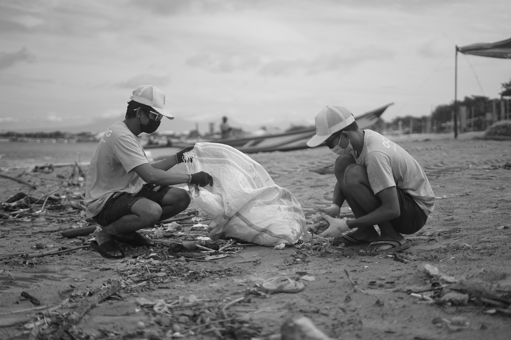

1: Puget Sound Killer Whales
“Seeing killer whales ply the waters of Washington state's Puget Sound has long been a great thrill for Seattle-area residents.
No other U.S. urban community can boast of resident orcas a few miles from downtown. Whale watching there is a multi-million-dollar
tourist draw. As one orca expert puts it, ‘Everybody wants a kiss from a killer whale’” (Olsen, 2006, p. 1).
Killer whales are a cultural and historical icon to the Pacific Northwest, living together with indigenous people in the Puget Sound
for 5000 years (EPA, 2023). No other community in the U.S. has the Puget Sound, a specific landscape to Washington that is ideal
for the north resident killer whales. Without historically abundant food sources there has been a decline in killer whale populations.

Photo Source Data Source
2: The Link Between Predator and Prey
Killer whales living in the Puget Sound have a strong ecological link
with direct evidence stating that north resident killer whale group size directly correlates to Chinook salmon abundance
(Williams, 2011).
Puget Sound’s toxicity from “pulp, paper mills, oil refineries, ports, boatyards, and storm-water runoff”
(Olsen, 2022, p. 3), and degradation of freshwater habitats (Couture, 2022) has ruined nearshore salmon habitat.
Without sufficient abundance in Washington..., population recovery for these whales
is impossible (Hanson, 2021).

Photo Source Data Source
3: Comprimised Salmon Habitat
This map displays the freashwater range of Chinook Salmon, these rivers have also been comprimised by the include dams, which block
salmon migration. Due to changes in habitiat such as these, half the Chinook salmon in British Columbia have
a spawning abundance so low that they are not likely to hit the biological benchmark to sustain those populations. In the USA,
most Chinook salmon coming from the Columbia and Sacramento Rivers are listed as endangered or threatened under the Endangered
Species Act. (Couture, 2022)
In the fall, salmon makes up 50% of killer whale diets. In winter to early spring, this percent increases to
70-80%. In the spring, salmon makes up 100% of north resident killer whales when abundant (Hanson, 2021). In the mid-1990s,
when wild chinook population declined, there was a population decrease in north resident killer whales from 219 in 1995 to
202 in 2001 (Olsen, 2006). This correlation becomes important when considering habitat and salmon conservation. Without concervation
effots for salmon habitat, there is no recovery for the north resident killer whales.
Data Source
4: Sensative Marine Areas
This map displays Sensitive Aquatic Areas in Washinton. Disruptions in these areas can have nevgative effects of wildlife such as
Chinook Salmon. In order to save Washington salmon and north resident killer whales, areas such as these need to be respected.
Without proper maintenence to these areas, these iconic and culturally significan animals may go extinct.

Photo Source Data Source
Data Sources:
Couture, F. et al. (2022) ‘Requirements and availability of prey for northeastern pacific southern resident killer whales’, PLoS ONE, 17(6), pp. 1–26. doi:10.1371/journal.pone.0270523.
(EPA) Environmental Protection Agency (2023) ‘South Resident Killer Whales’, EPA, https://www.epa.gov/salish-sea/southern-resident-killer-whales
Hanson, M.B. et al. (2021) ‘Endangered predators and endangered prey: Seasonal diet of Southern Resident killer whales’, PLoS ONE, 16(3), pp. 1–27. doi:10.1371/journal.pone.0247031.
Olsen, K. (2006) ‘Orcas on the Edge’, National Wildlife, 44(6), pp. 22–30. https://search-ebscohostcom.offcampus.lib.washington.edu/login.aspx?direct=true&db=a9h&AN=22619968&site=ehost-live
Williams, R. et al. (2011) ‘Competing Conservation Objectives for Predators and Prey: Estimating Killer Whale Prey Requirements for Chinook Salmon’, PLoS ONE, 6(11), pp. 1–9. doi:10.1371/journal.pone.0026738.